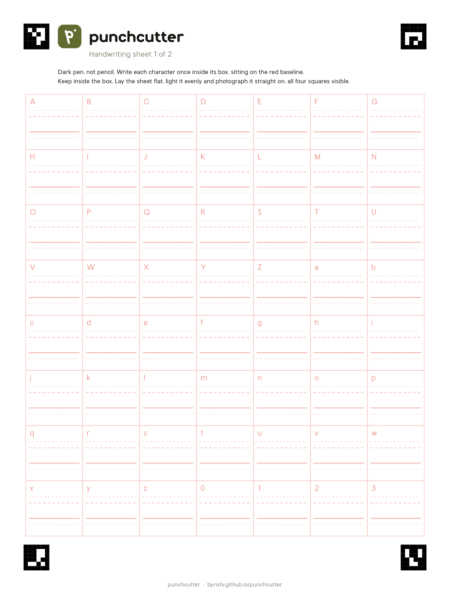
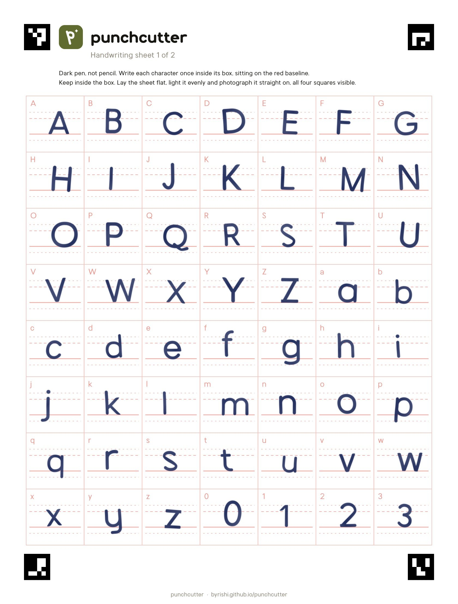
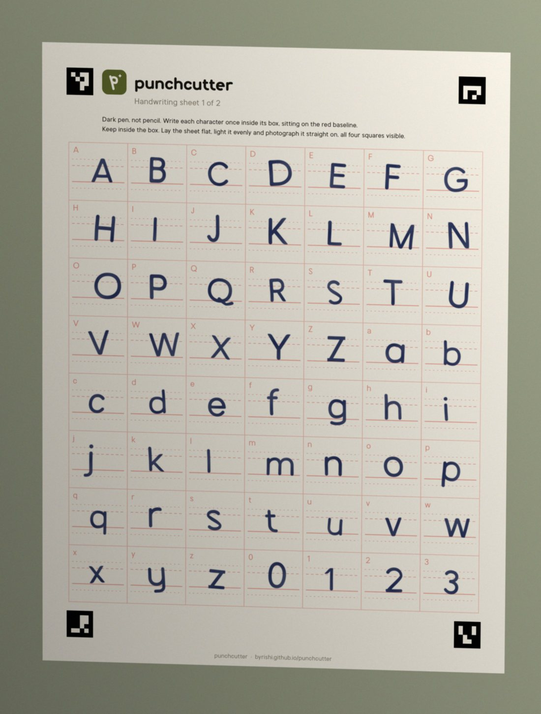
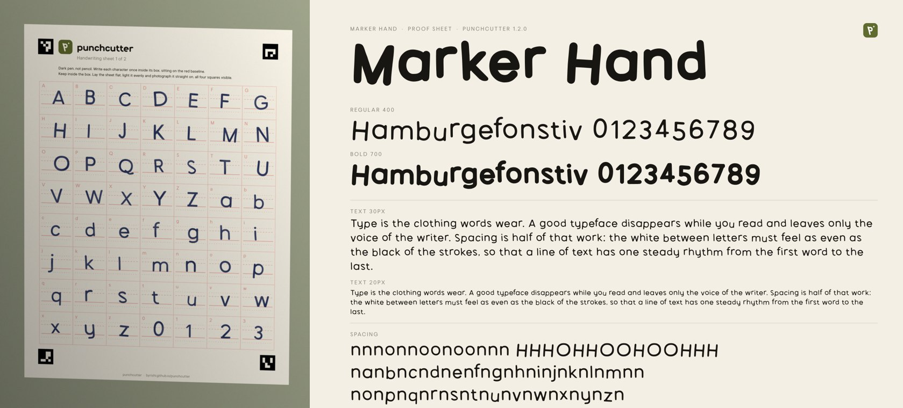
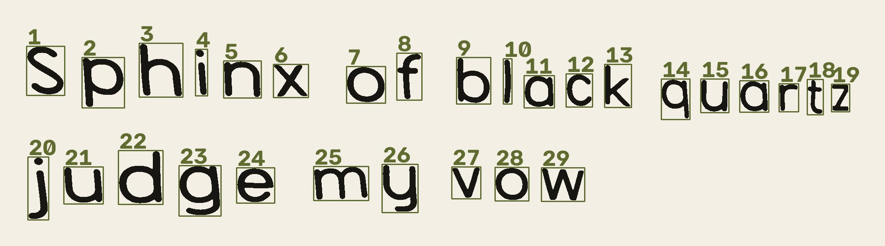
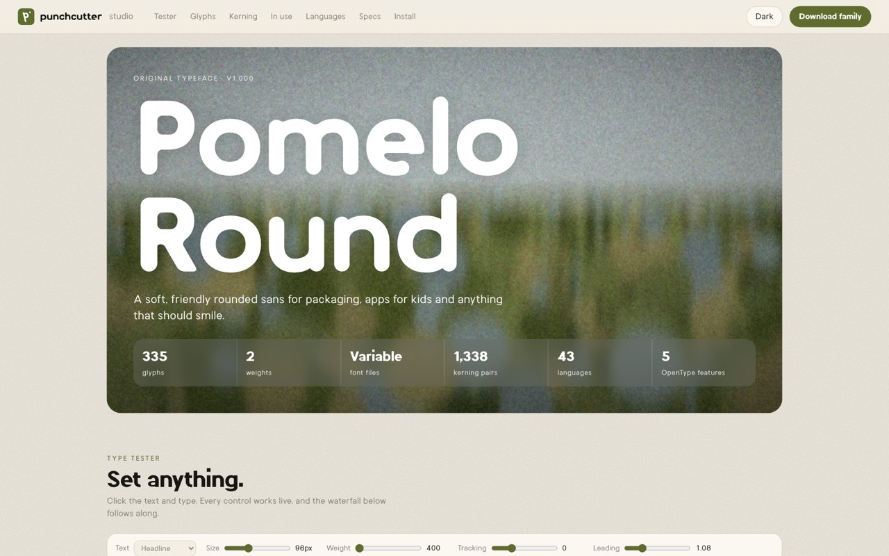

Describe a typeface. Get a font family. Or write on paper and send a photo. A type foundry that lives inside Claude, ChatGPT, Codex and other AI agents.
Every letter on this page was cut by PunchcutterFive ways in
Open it and pick a route, or just say what you want. Every route ends with the same finished family and its Studio.
One sentence about the feeling you want. Get a full family.
Print the sheet, write on it, send a photo. The best photo route.
A photo of any writing or lettering. No sheet needed.
Send a picture you love. Get an original family with that feeling.
Change a Punchcutter font: weight, width, spacing, single letters.
Your handwriting
Print the sheet and fill it in with a dark pen. Take a phone photo at any angle. Corner markers square it up, the red guides drop out, every letter is traced, and your x-height and stroke weight are measured. Anything you did not write is drawn to match.




No printer?
Write on a notebook page, a napkin or a whiteboard and send the photo. Punchcutter finds and numbers each character, reads them, and traces them. "Sphinx of black quartz, judge my vow" covers a to z. The sheet still gives the cleanest result.
Handwriting guide
Gallery
Type below to set it in all five. Open any family to try its Studio: the app every Punchcutter font ships with.
How it works
Each stage reports what it did. Between drafts the AI looks at the proof, finds weak letters and fixes them, at least twice, before anything ships.
Studio
Type tester, weight slider, feature switches, glyph inspector, install guide and a download button, in one file that works offline. In Claude it opens right in the chat.
Open a Studio
Install
A Claude skill, a Codex skill, an MCP server for ChatGPT, Claude Desktop, Cursor, Windsurf and VS Code, a guide for other agents, and a plain command line tool.
/plugin marketplace add byrishi/punchcutter
/plugin install punchcutter@punchcutter
# then
/punchcutter1. Download punchcutter.skill
2. Settings → Skills → upload it (code execution on)
3. Say: make me a fontpip install "punchcutter[mcp] @ git+https://github.com/byrishi/punchcutter"
cloudflared tunnel --url http://localhost:8000
punchcutter mcp --http --public-url https://YOUR-TUNNEL
# ChatGPT → Settings → Apps & Connectors → Advanced
# → Developer mode → Create → https://YOUR-TUNNEL/mcpnpx skills add byrishi/punchcutter --agent codex
# then in Codex
$punchcutter
# or as an MCP server
codex mcp add punchcutter -- punchcutter mcppip install "punchcutter[mcp] @ git+https://github.com/byrishi/punchcutter"
{
"mcpServers": {
"punchcutter": { "command": "punchcutter", "args": ["mcp"] }
}
}git clone https://github.com/byrishi/punchcutter && cd punchcutter
pip install -r skills/punchcutter/scripts/requirements.txt
# then ask your agent:
# Follow AGENTS.md and make me a rounded friendly fontpip install "git+https://github.com/byrishi/punchcutter"
punchcutter new "My Sans" --preset humanist
punchcutter build MySans.json